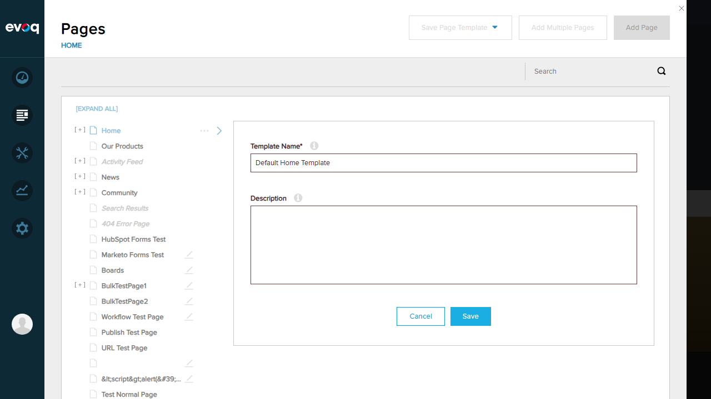

Test 2: Default template auto-selected when creating new template
FAILObjective: Verify that when adding a new template, the default template is automatically selected as the base template.
1. Navigated to Content > Pages
2. Clicked "Save Page Template" > "Evoq Page Template"
3. Entered template name "Default Home Template"
4. Clicked Save button
5. API returned 400 Bad Request error
Issue Found
Unable to create templates due to API errors. The SavePageDetails endpoint returns HTTP 400 Bad Request when attempting to save a page as a template. Additionally, the template list cannot be loaded (500 error), so auto-selection of default template cannot be verified.

Screenshot showing template creation form

Screenshot after attempting to save template (API error occurred)
Code Analysis (templatesCreateManager.js:161-173):
The addTemplate() function calls getDefaultSelectedTemplate() which returns the template with
The addTemplate() function calls getDefaultSelectedTemplate() which returns the template with
useDefaultSkin === true, then auto-selects it via defaultSelected.selected(true).